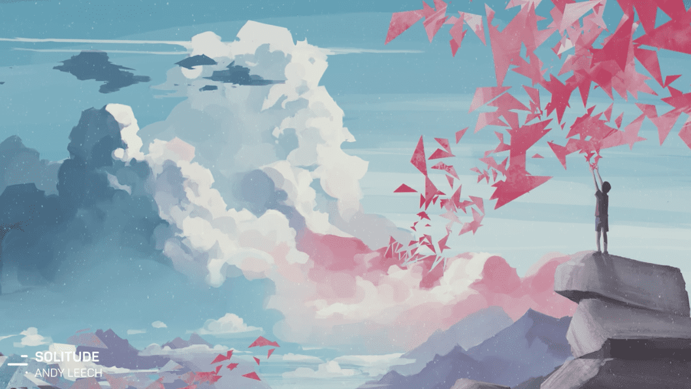
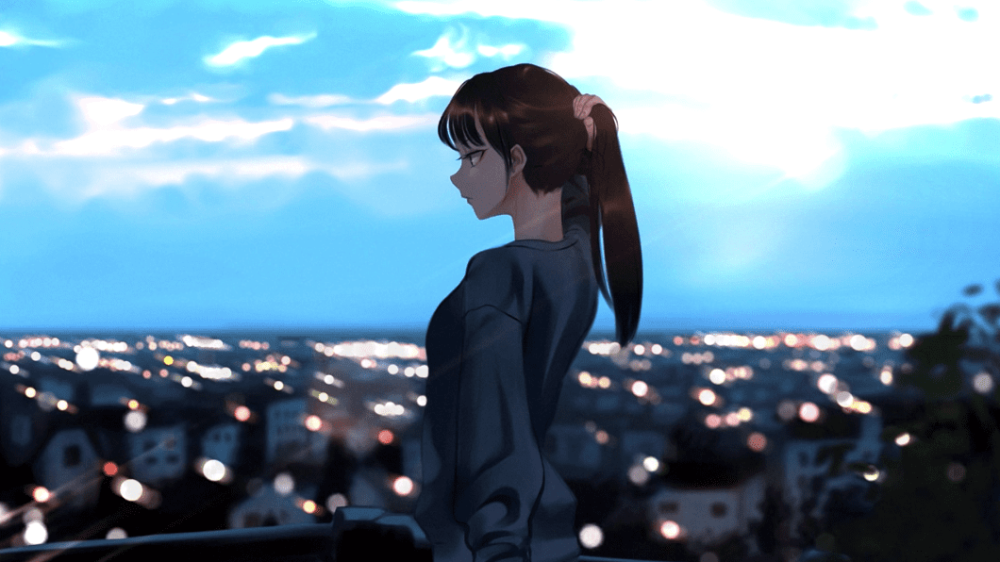
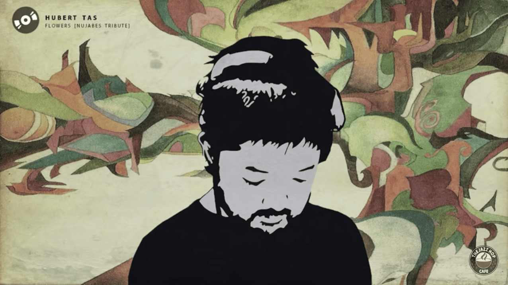
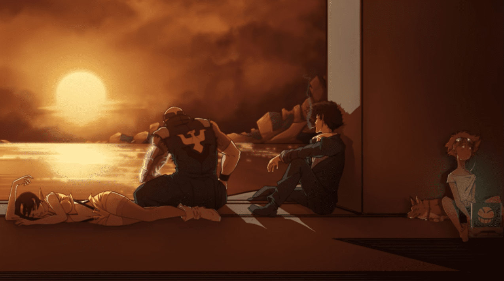
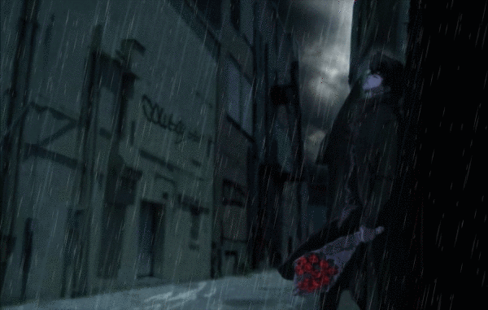
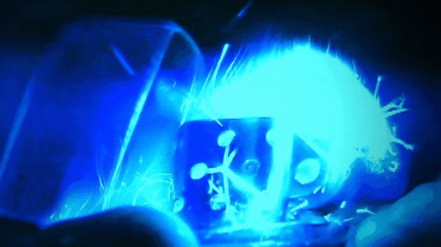
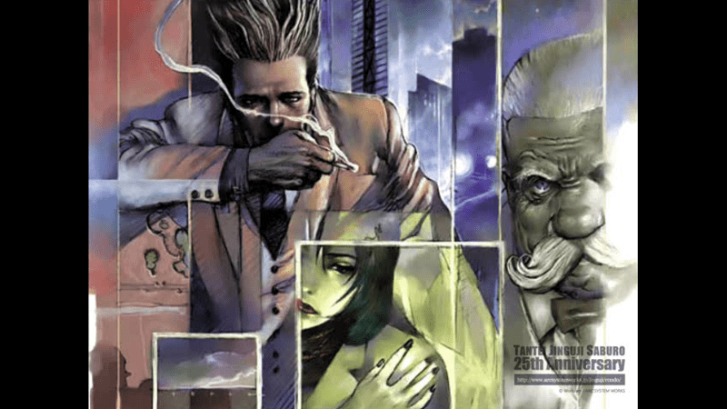
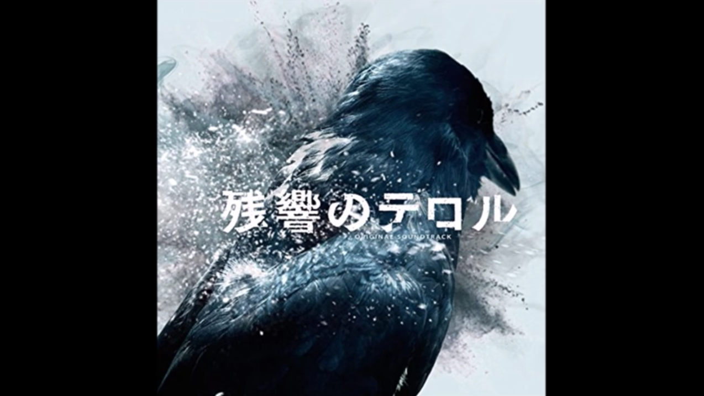
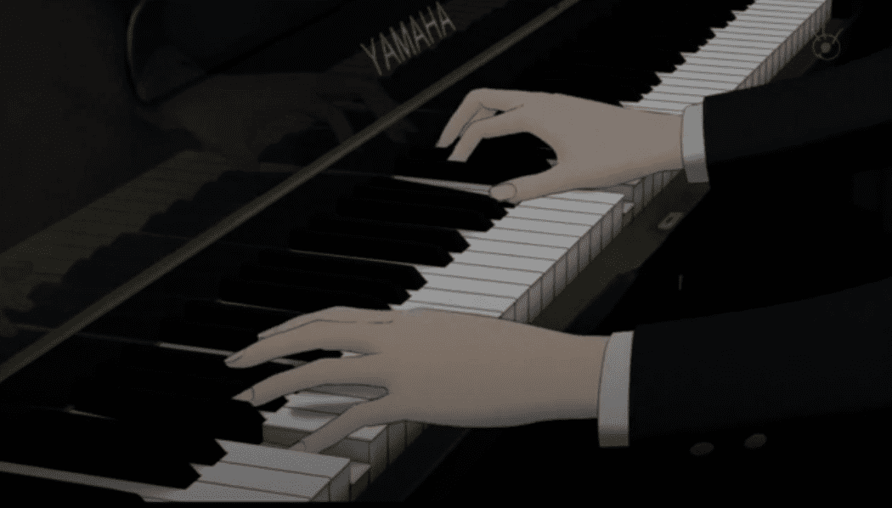

ALL Chillout Jazz Relax Moist Cool Cheerful Focus  56:18  1:06:06 channel  2:00:00 list  52:44 2:00:00 2:00:34  14:37  2:37  56:47 3:38  39:59  3:36 3:36 1:44


![Youtube - Lofi hip hop mix - Beats to Relax/Study to [2018]](img/FlxM_0S2lA.gif)
![Youtube - lo-fi study & sleep tape [lo-fi hip hop / jazzhop / chillhop mix] (Study/Sleep/Relax music) 2017](img/FV0DZhpWy2k.png)